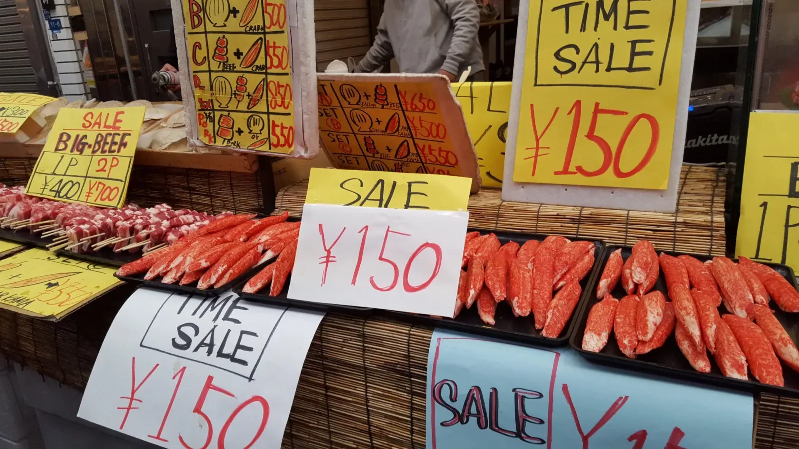

La risposta breve
Voli esclusi, conta circa ¥12.000 a persona al giorno viaggiando in economia (ostelli o capsule, konbini e ramen, treni locali), circa ¥25.000 con un budget medio (business hotel in due, ristoranti, qualche Shinkansen) e ¥50.000+ per un viaggio comodo. Il cambio si muove molto: converti con il cambio del giorno prima di organizzare. A far salire il conto sono i voli, gli hotel in alta stagione e i lunghi viaggi in Shinkansen.
Budget al giorno (a persona, voli esclusi)
| Economico | Medio | Comfort | |
|---|---|---|---|
| Dormire | ¥4.000–6.000 (ostello, capsula) | ¥8.000–12.000 (metà doppia) | ¥20.000+ |
| Mangiare | ¥3.000–4.000 | ¥6.000–8.000 | ¥15.000+ |
| Trasporti in città | ¥800–1.200 | ¥1.000–1.500 | Anche taxi |
| Visite | ¥1.000–2.000 | ¥2.000–4.000 | Tour, esperienze |
| Totale | ~¥12.000 | ~¥25.000 | ¥50.000+ |
Cifre indicative basate sui prezzi tipici 2026 a Tokyo, Kyoto e Osaka; i lunghi viaggi in treno sono a parte.
Dormire
Una doppia in un business hotel (piccola ma pulita e ben attrezzata) costa di solito circa ¥10.000–20.000 a notte a Tokyo, un po' meno a Osaka e di più a Kyoto in primavera e autunno. Capsule hotel e ostelli partono da poche migliaia di yen a letto. Una notte in ryokan con cena e colazione è un'esperienza da mettere in conto: da circa ¥20.000–30.000 a persona. Al check-in spesso si aggiunge una piccola tassa di soggiorno. Scegliere la zona giusta conta più delle stelle: guarda dove dormire a Tokyo.
Mangiare
- Colazione al konbini (onigiri, panino, caffè): ¥400–700.
- Ramen, udon, curry, gyudon: ¥800–1.500.
- Pranzo a menu fisso (teishoku) al ristorante: ¥1.000–2.000. Spesso il pranzo costa molto meno della cena nello stesso locale.
- Cena in izakaya con da bere: ¥3.000–6.000.
- Sushi: al nastro da ¥150–300 a piatto; un omakase al bancone può costare ¥10.000–30.000 e oltre.
- Acqua e tè sono gratis al ristorante e nella maggior parte dei locali non c'è coperto né mancia.
Se non leggi il giapponese, guarda la nostra guida ai menu in inglese.
Trasporti
In città metro e treni costano circa ¥180–400 a corsa; carica una carta IC (Suica o PASMO) e passala all'entrata e all'uscita. Tra una città e l'altra la grande spesa è lo Shinkansen: circa ¥14.000 con posto riservato Tokyo → Kyoto e poco di più fino a Osaka. Il JR Pass è rincarato molto nel 2023 e oggi conviene solo per itinerari lunghi con molti Shinkansen: fai i conti con la nostra guida al JR Pass. I bus autostradali costano molto meno ma sono più lenti.
Visite ed extra
- Templi e santuari: molti sono gratuiti, altri ¥300–1.000 (Kinkaku-ji ¥500; Fushimi Inari è gratis).
- Musei e osservatori: ¥1.000–3.000 (Shibuya Sky, teamLab e simili sono nella fascia alta e si esauriscono).
- Onsen e bagni pubblici: ¥500–2.500.
- Pocket Wi-Fi o eSIM: qualche migliaio di yen per tutto il viaggio.
- La tassa di partenza internazionale di ¥1.000 è già inclusa nel prezzo del volo.
Esempio di 10 giorni (budget medio, a persona)
| Voce | Costo |
|---|---|
| 9 notti in doppia condivisa (Tokyo, Kyoto, Osaka) | ~¥75.000 |
| Mangiare, 10 giorni | ~¥65.000 |
| Trasporti in città (carta IC) | ~¥12.000 |
| Shinkansen Tokyo → Kyoto + gite | ~¥20.000 |
| Visite, biglietti, un onsen | ~¥25.000 |
| Totale sul posto | ~¥197.000 + voli |
Come risparmiare
- Fai il pasto principale a pranzo e usa il konbini per la colazione.
- Evita fioritura dei ciliegi, Golden Week e Capodanno; l'inverno (fuori dall'Hokkaido) e l'inizio dell'estate costano meno.
- Prendi voli con arrivo e partenza diversi (arrivo a Tokyo, ritorno da Osaka) per non tornare indietro.
- Non comprare il JR Pass per abitudine: confronta prima i biglietti singoli.
- Compra nei negozi tax-free con il passaporto e chiedi in negozio come funziona il rimborso (il sistema cambia da novembre 2026).
- Usa i negozi da 100 yen per le piccole cose da viaggio.
Organizza il budget per il Giappone
Alcuni link sono link affiliati: prenotare tramite essi non ti costa nulla in più e aiuta a mantenere 687 gratuito.
Il budget del Giappone, giorno per giorno.
In 687 Japan organizzi ogni giornata con treni, visite e mappa offline, così vedi in anticipo quali giorni richiedono uno Shinkansen e quali si fanno a piedi. Se cambiano i piani, NOW ricostruisce il resto della giornata.
Fonti
- Ente nazionale del turismo giapponese – pianificare il viaggio
- JR Central – tariffe Shinkansen
- Japan Rail Pass (ufficiale)
- Agenzia nazionale delle entrate – tassa turistica internazionale
Verificate su questi siti ufficiali a novembre 2026. Prezzi e regole possono cambiare: controlla sempre prima di partire.